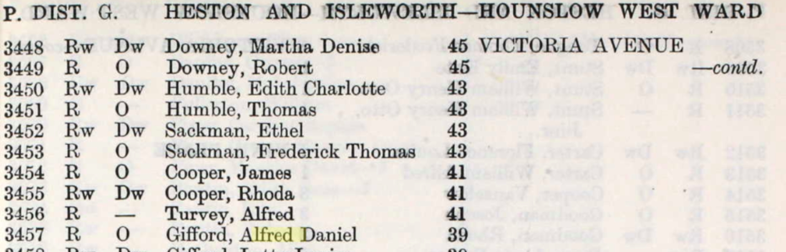

Alfred Daniel Gifford 1887 - c1951
[ Home ] | [ Calendar ] | [ Surnames Index ] | [ Family History ]A painter and the son of Alfred Gifford (a milkman) and Hannah Lawrence (a laundress), Alfred Gifford, the first cousin twice-removed on the mother's side of Nigel Horne, was born in St Lawrence, Thanet, Kent, England on Jan 11, 18871,2,3, was baptized there on Apr 10, 1887 andhad 1 child, with Letty Louisa Beech: Lorna Winifred,.
Throughout his life, Alfred lived in several places: on Southwood Road, St Lawrence, Thanet, Kent, England on Apr 5, 18916; on Adelaide Road, Gillingham, Kent on Mar 31, 19017; at 39 Victoria Avenue, Heston, London, England in 1939; and at 21 Ferndale Avenue, Hounslow, London on Sep 29, 19391. On Aug 25, 1919 he was serving in the army (regiment: Royal Tank Corps; Service number: 536585).
He died c. Feb 1951 in Heston4,5.
Parents
- Alfred Lewis Henry
- Hannah was born c. Jul 1865
Children
- Lorna Winifred was born on Jul 2, 1924
Citations
- 1939 Register - Findmypast (was the head of the household)
- England & Wales births 1837-2006 - Findmypast
- Royal Tank Corps Enlistment Records, 1919-1934 - Findmypast
- England & Wales deaths 1837-2007 - Findmypast
- Middlesex Monumental Inscriptions 1485-2014 - Findmypast
- 1891 England, Wales & Scotland Census - Findmypast (was age 4 and the son of the head of the household)
- 1901 England, Wales & Scotland Census - Findmypast (was age 14 and the son of the head of the household)
Media
1939 Electoral Register

1891 England, Wales & Scotland Census - GBC/1891/0005906990
England & Wales births 1837-2006 - BMD/B/1887/1/AZ/000211/294
Middlesex Monumental Inscriptions 1485-2014 - PRS/MIDD/MONUINSC/18534
England & Wales deaths 1837-2007 - BMD/D/1951/1/AZ/000538/143
Royal Tank Corps Enlistment Records, 1919-1934 - GBM/TANK/041657
1939 Register - TNA/R39/0842/0842H/015/08
1901 England, Wales & Scotland Census - GBC/1901/0005779420
England Births & Baptisms 1538-1975 - R_884656604
Kent Baptisms - GBPRS/CANT/B/96405555
Family Tree

Generated by Ged2Site. Last updated on Jul 20, 2025